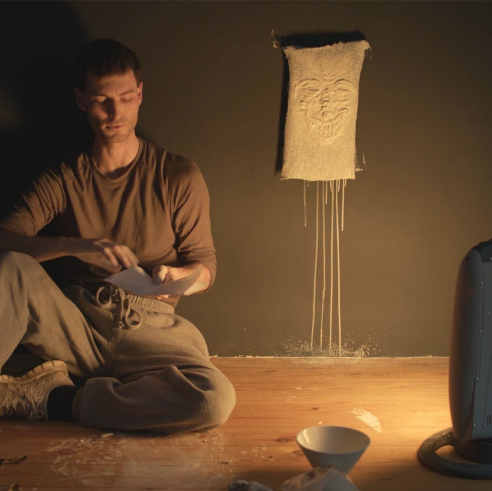
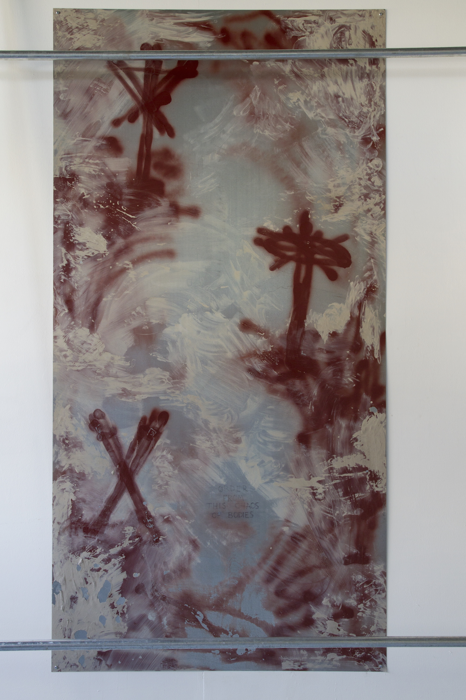
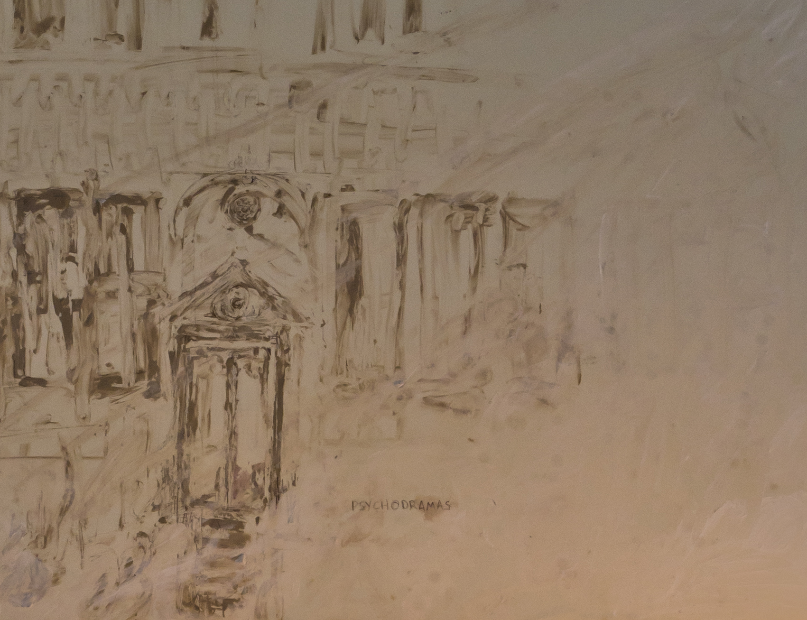
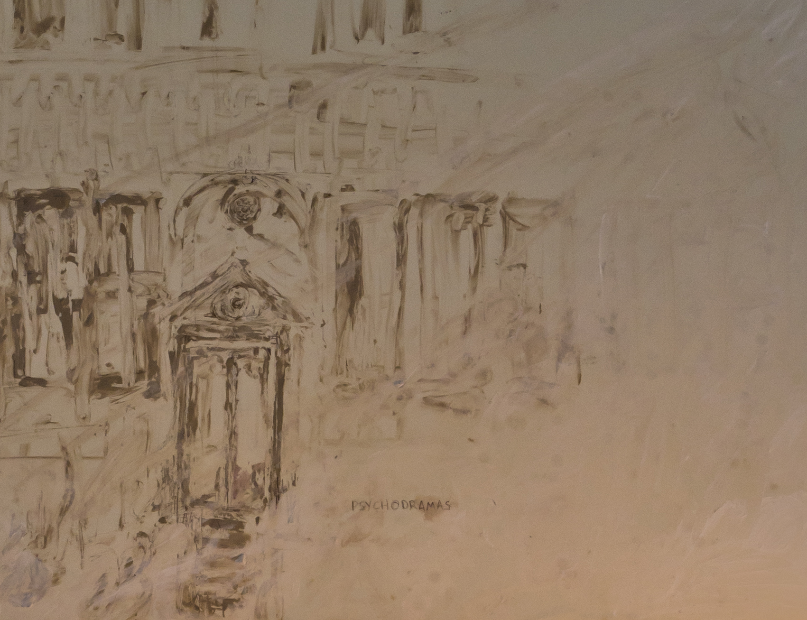

Current/Forthcoming
THE ATTENDANTS
-
ONE: THE GALLERIES (AFTER JK)
We get to the space late and all together, in the evening, just as the sun is fully fading from the sky. It is a familiar scene - the gallery lights have been switched off and we can see straight in through the glass facade (this building was a store front) - there is 2d work spaced along the walls blank and inert and indistinct in the dusk - dark rectangular shapes that could be paintings or photographs. They could be holes cut into the walls. No one is moving inside because we have missed the opening and with it our opportunity to relate to this show directly, as good spectators and as allies. In the half light bleached of it’s colour clustered around the vitrine front we adopt another posture, one that we have composed on our own terms in wide, lateral movements across the surfaces and the opaque walls of the complex (these resist us). We are probing for some point of entry, moving across planes that are rougher or smoother, that take more or less skin, more or less energy, they take small tolls. Amongst ourselves we have developed communal mechanisms for recharging in the aftermath of these forays but tonight is all spending, spending time and attention and energy, focusing in on the how these rooms have been arranged and on what we can take from them. Understand that the gallery with its serried monochromes is only the spears tip of the tangled architectural volume that takes up most of this suburban block. It extends like a labyrinth above and below ground, and there is no way of knowing from this external POV how far back the rooms go. Inside, the construction materials are cheap and modular, and the spaces are built to be as neutral as possible, and so could equally house galleries, barracks, habitation, or industrial facilities as required. If you listen very carefully in the moments when the wind drops you will hear the soft movements deeper in, far back and away from these theatres of display and bad commerce; slow movements through rooms where that other game is played, where the light is cheap and white and very bright and where every single detail is inscribed for all time in exactly the mode that it was originally conceived.
But we are far too preoccupied with forcing entry to listen closely, to take in these minor details. The night is warm. A huge wind moves far above us in vertical sheets but at street level the air is extremely still. Spring rain (is it already Spring?) has scrubbed all of these surfaces clean. It is hard to imagine carving anything out from the inert mass of architecture in front of us - the machines would be specialised and much too large to carry easily by hand. Inaccessible then to our tight gang of gallery fans. All of our machines are portable, sleekly designed, more interface than hardware, more concerned with the games of light, sound and image, with optical tricks and feints. It is using these that we have organised our play into a series of social units as strictly formal as anything in usage in the USMC. Our compositions are deceptively simple. They are first: secretive, and second: adverse to drama.
A ragged hole has opened in the one of the glass panels - something heavy was thrown through and now lies inside the room on the polished concrete floor surrounded by a halo of shining beads of safety glass. There are no alarms and somehow you did not even hear the glass break though it must have been loud and frightening for anyone living close by. Wonder if the police are already on their way. See them, very far away, but moving closer rapidly, see the dark car carving through the rain and the hot city, sleek and huge and pointed straight towards us. The men inside in uniform are cool ones, checking again the straps of holsters and the actions of pistols, and their heads are leaned back from you, and their eyes are lost in the shadows and the darkness above the dashboard, no lights and no sirens, not even the ember of a cigarette to burn its brief afterimage into the scene that plays itself out around us. Nothing sentimental here. No buddy tropes at all. Archons and Powers drawn precise as statues. We all climb through together. The gallery is longer and thinner than it looked from the outside, almost a corridor, and we see that the monochromes are really thick and strangely opaque forms cast from plastic or some industrial ceramic, and spaced evenly along the one wall that seems to constitute the whole of the show. There are small biro drawings pinned to the wall next to some of these objects but we do not stop to look. We enter the back room, storage, paint tins, mops, stacks of paper, a laptop; and we find the next door and we keep going.
-
TWO: HD
I take elaborate notes after every session I spend with the group to see how much further I can implicate each of them inside of a criminal framework. I was sent to this city almost three months ago to do precisely this, and was told then that these young and intense men and women were radicals, that their various projects were dangerous and even potentially violent or terroristic, and that in order to infiltrate their tight social circles I would need to adopt their lifestyle and mannerisms and even in a deeper sense parts of their worldview. I was told that they, perhaps more than any other group, were primed to recognise betrayal and ultra-sensitive to its various conditions and outcomes, and this understanding gave all my preparatory research, first in Canberra and then at the Sydney College of the Arts, a feverish intensity that I believe was responsible for the total success of my integration.
It is mostly at night, alone in my apartment, that I do the laborious work of note taking and taxonomy. I draw each of them a small prison. For each I have prepared a type of reveal, a trapdoor that opens into a horror story of detention and abuse; not out of hatred, but as sheer professional contingency. While I work I imagine a room somewhere far underground, a large room like a warehouse lit up in blazing electric light, that houses the rows and rows of the pain machines that my notes describe. Every single one of these machines is brushed steel, and each has its perfect occupant. All of these relationships are built around the individual. Again and again the individual. The room will wait for you, maybe forever. The men who staff that place are professionals, and they are patient and methodical. But I have not yet found anything at all in my time with the group that could be considered really criminal, outside of drug use, which I think I could use by itself to send most of them to prison for several years at least, if that order ever came.
Tonight we are moving together through one of London’s parks, quickly, over uncut grass, weaving through the small zones of illumination cast from the steel lampposts that stand around the boundary at regular intervals. Their bodies in front of me pass in and out of visibility; in and out of that absolute darkness at the edge of the pools of orange light; the sky is wide open above us; there is an awareness of depth pushed upward and of smallness; of wind and noise, insulated for now behind the neat rows of birch trees that are planted along the edges of the asphalt pathways; they are lit up golden; they take all of the fury of the wind and bend with it, they keep our bodies enclosed. From the hill that we climb I look back and see London laid out like a crystal matrix, a beautiful, limpid network of point light and glass transparency and the shreds of vapour trails caught in place, crowning the tops of the towers and throwing back to us the junk illumination that leaks out into the sky and makes it glow.
It has to be at night L said passing out the capsules earlier, it has to be on top of the hill - these are ancient forms and they are strictly formal - this our sad little Walpurgisnacht. As with lucid dreaming you can steer a trip in advance if you know what you’re doing. For this particular curated experience L’s preparations have centred almost psychotically around a particular set of images; of material and emotional comfort, of ease, of an endless uninterrupted desire that burns without sticking or hurting, of engineering a truly permanent escape from all of the shit cash working that L has convinced himself stinks of that failure that plays out over decades. He tells us that these are images of human dignity, and that living without dignity for too long poisons people permanently. Pre-production included an elaborate working through of fantasy roles and roleplaying, a regime of sleeping beneath different coloured lights for several nights leading up to this one, and exhaustively mapping out of each other’s character traits, affordances, and expectations. Eventually we come to the place, it is the shell of a brick municipal building from the twentieth century, small, like a caretakers house, and overgrown with weeds that push their way up through the concrete foundation slab. We sit together in a circle and hold each others hands as the psilocybin begins to take effect. I wonder how many props, chemical, theatrical, and others, that these serious games will eventually require - what the good conditions really are, how repeatable and how modular the narratives can be built, how many unique bodies can really ultimately be drawn from these recombinations. It does not matter how many variations of outfit, makeup, weaponry or magic you can devise - eventually they will all be played out to exhaustion and begin to produce monstrous doubles and replicas. This final number will always be precise and unchangeable even as it remains obscure.
L lights a small fire on the floor of the cabin in the centre of our circle of allies and collaborators. His fantasies of comfort are very beautifully described. We map out whole cities together on the hill, describe entire cultures that live without fear of emotional repression or bad faith, recount the military conquests of beautiful warriors whose ultra-materialist bodies have been made impervious to hurting. London is close by us as we talk and talk and let the fire burn down to an ash ring on the dirty floor.
The trip lasts for about ten hours and then the sun comes up and London recedes again and we all retreat back to L’s house to collect ourselves. There is an enormous table in his kitchen, wide and long enough to seat at least thirty, and probably carved by hand from some mystical oak by this country’s most ancient native inhabitants. L insists on cooking for us after each of the sessions as a type of grounding mechanism and segue back into waking reality. I have seen him, maybe the only time I have ever seen him truly happy, preparing monstrous feasts for friends and friends of friends, refusing all help, pumping Bernard Hermann and whistling along as he shapes by hand the perfect brunch that only he can see. Many of the group are in tears after their nights labour, and I can sense the community and small group love like a thick scent that covers my tongue and throat. But this morning, just as we are all beginning to get seated, there is a sharp banging at the door, loud and unafraid and incredibly hostile. Immediately all of my senses begin to scream COP. But I have received no orders. I cannot think of anything that has changed in the groups behaviour tonight that might warrant something like a dawn raid. The door is kicked in violently just as L moves to open it and men carrying weapons pour into the room and begin immediately to zip tie the hands of these doomed souls whose trust I have spent three months earning. I know immediately that these are not police. They are all very young, and they move strangely, with a mixture of brutality and self consciousness. Their eyes are so hostile that you cannot look at them. The weapons that they carry are eclectic and range from sports rifles to enormous handguns - one has hung a sword from his complex utility harness, replica or functional I cannot tell. Not one of the group speaks as they are led out into the bright, clear morning and the unmarked vans that wait for them, but when I announce my undercover status and produce my badge from inside my backpack L twists his shaggy head all the way around to lock his feverish eyes with mine, and chokes on his words, and calls me a coward.
-
THREE: PURE COUNTRY
When I email L I get no response. She has no online presence, a google search shows only pictures of her paintings and I realise that I can barely even call her face to mind even though it has only been a year since we shared a studio together. I lurk what content there is, I go over and over the pictures of shows that I already know every detail of. Severe, formal canvases in unlit rooms, at dusk, the windows open, or hung up in galleries saturated with white light so bright that the walls begin themselves to enter into the compositions. Brushed steel frames, and frames of timber bolted together, and canvases that have been brightly dyed for obscure industrial use.
I need to speak with her. I have been feeling her presence recently - have found long red hairs swirling in the shower drain or stuck to my feet in the water, sometimes in my food in the morning. In my studio and clothes. I have no idea how this is happening; L is still in Melbourne which is thirty hours on a plane. Still, traces of her (I suspect other less visible traces also) have somehow begun to haunt the domestic and professional spaces that I live in. It is the most pleasant gaslighting that I can imagine.
When I think of L I picture her most often in the studio that we shared together (though her face is still hidden in these recollections), an endlessly subdivided warehouse next to a freight train line and a power plant. At night the whole neighbourhood was lit up with industrial floodlights, which had the strange effect of making the huge buildings look like toys, tiny and precise. I think I remember that she had money from somewhere else and so could afford to spend her time concentrating on painting. Much of her process was really sourcing materials - the canvases themselves were stripped back almost to readymades, and this tendency toward formalism only increased over the time that we knew each other. When we were both much younger and studying together at the SCA she had been obsessed by colour, and had worked intensely through its implications on the strictures of ground and figure - using colour only she had her paintings move through the gallery (a sly walk, a villain’s walk), had them slouch and sit around and even share looks and communicate with one another, although never with any audience, all via these codes of intensity and repetition. The programme for these early shows looked like this: pure colour for undifferentiated stuff or content; the formalism of the readymade to situate and modulate it into a type of enunciation; and then a commitment to humour that would lift a show out from it’s conversational mode and into sequence and poetry. It was always this humour that I found most beautiful - how she could extract a sharp and humane comedy (I thought of Cervantes) out from the crystal rooms of the galleries where she showed, and that pursued her like bachelors.
It was only over years of friendship that I came to the realisation that, parallel to this, L was also constructing a second type of show, another mode of enunciation - one that became increasingly dominant until, by the time that I finally decided to leave Australia, it was this mode that I most closely associated with my friend. I think that she had always had this other tendency inside of her, and it only ever grew it’s complexity outwards beneath the perfect literary games of surface, trope, and theatre that she first developed (like a weapon) as a young female artist coming into contact with all of the intense small group dynamics of the post art school scene. I have never met anyone in my life as familiar with the practices of pragmatism, contingency, and discretion. If I know anything at all about these strange games of desire and distancing and refusal (and betrayal) it is only because I spent so much time sitting beside her on the wooden floorboards of our sheet plaster cubicle watching in fascination as she learned month by month how to comprehensively represent herself.
This second mode also described a communication between surfaces, but in this version there was no colour. Instead, the body of the readymade (which here was also the surface) combined content with its modulation to produce one gesture, a single uninterrupted transmission, a materialist scream with either a constant volume, or a volume that was raised higher and higher forever into perpetuity. All paintings, all surfaces, in transmission with all others at all times, and also bringing the surfaces around them into that same operation, so the walls of the gallery would begin the scream, and the surfaces of the buildings outside the windows, the thickness of the panes of glass, the way that sunlight or streetlight would occlude them, the way a wall would take the light and hold it, any given opacity beginning it’s own sovereign transmission. A horror story, without modulation or syntax, and so without any possibility for closure.
Was this already the beginning of the communication, even back then? The surface of the face of L already arranging its features into a directional unit like a searchlight or a laser beam, all skin pulled back from the front of the skull to expose eyes and teeth, the face itself focused via minute tweaks in expression, the brightness or clarity of eye contact, in modulations of breath, touch, and scent.
I could hardly believe it the first time I saw her early experiments. These prototypes were never shown in any gallery - I remember four small dark rectangles, one on each wall of the studio, dark enough that the actual material of the surfaces was ambiguous. I had come in late after work and the space was already swollen with evening, saturated with evening. In the half light for about a second I thought that she had cut four small and perfectly rectangular sections out from the walls that we shared. I finished working quickly and left the paintings there in the dark room, unformed but so obviously sending out their signalling beams that to spend even one more minute in that room with them at the end of the day would have been completely impossible. At least this was how I remember feeling at the time.
Not long after this I found her in the space working on several large panels made from a dark metal that seemed to keep light inside of it. She was treating the surfaces with cleaning products in broad parallel strokes, in the same precise way that a window cleaner makes sure that their surface is completely covered. Several failed pieces were leaning against the walls and L explained that she had tried using bleach which had immediately oxidised the surfaces and spoiled their reflections. The soapy stuff she was wiping across the remaining eight panels was an industrial surface cleaner and the whole space stunk of acrid chemicals. While I watched she used a short blade and a steel ruler to score the surfaces close to their edges, cutting in perfect frames of brighter metal (it must have been lead) that stood out brilliantly.
How deeply fixed inside a broader framework are these sending panels interior only to L and the faces that she has built - these technician’s tools tested against the furnace wind that burns up the rooms that you inhabit - that blasts at the brick and concrete shells that house you, that would cook you alive if only it could find some weak point somewhere to enter. There is nothing at all at human scale to join with here, all of these relations are entirely material and lack any interface. Nonetheless she has made use of them.
From here in London I can only really speculate as to what that final composition must have looked like. In my mind I see the panels propped against the walls (no hang) and arrayed in a semi circle like standing stones - the install is directional, and I think could be focused like a lens via small tweaks in the placement and orientation of the individual pieces. These surfaces hold no light at all. They are black holes; not tiny rectangles this time, each one is big enough to swallow up a human body easily. In my mind it is the old studio space that houses them and it is still dusk there - the light is still failing - it is swelling in the rooms and the panels and they are saturated with its charge. Another magic hour drawn in parallel but not to make the face more soft, not for a camera to take and work it’s transmutation. I realise that the light is as much a part of the sending machine as the paintings, that it draws other faces that have nothing at all to do with L or with my sentimentality; another language whose transmission would reach across vast distances - that would work only for our true transference - against the final impossibilities of language - in this hour and in these rooms and paintings it is telepathy and communion and the most direct possible intimacy. I think that it is love also but I am wrong.
Remember that last time that you spoke and she told you the secret of how it would happen.
I have absolute confidence that L will be able to tune the transmission from her end. It is likely that some small and easily overlooked decision or gesture was misaligned - maybe the detail work on one of the surfaces or maybe the precise placement of a panel in relation to the others. These installs are always so finely articulated. Obviously the composition is faulty somehow, because when I try to push those long red hairs into the honeycomb structure of my scalp they simply fall away and nothing changes - NO TRANSITION takes place. The follicles of skin may be sinking in, it is difficult to be completely sure.
She said that it would be in a pink beam of light that would curve around the earth. It would curve to us because its relationship to neurosis and psychodrama in some way approximated human compassion. But this was only ever an approximation since the beam obviously had no human qualities or organs and was alien even in it’ simple language of transference. It is enough for now that it would arc across the sky that traces out the boundary of our pure country - that it would join our two domestic spaces and afford one final chance to speak without mediation.
Original text commissioned by and first performed at Obsidian Coast, to accompany the show While the Summit Reverses
UNTIMED SERIES
I knew M in Athens for a month and when I think of him now I see a series of fixed scenes like film stills. Each one is composed. M’s body bent forward into the bed and everything in the room still except the wind that comes in through the big windows that he has opened onto the evening. Swollen purple light etches the contents of the room (glass, dresser, unlit lamp), everything is permanent, the hollows and mounds of the sheets are as heavy and durable as concrete. His skin is like concrete and I think that I would need diamond tools to shift him from this posture. It is femme and suits him though he will only show it to me as part of some other game that I still then did not fully understand - a sex game that was also the playing of one another; M to me and me to M; playing as a movement together from our real bodies into a series of sharply defined images. They are his images, the first time I can remember that I would have preferred the postures of someone else because they were more vivid than mine, even if less precise. They are images (they were never for me only) that face away from commitment to sequence, and that work to break down every relation of cause and effect.
The body disappears in these moments; the body begins to vibrate so finely that it loses coherence; the body is stretched over, is abstract curves of back and rib and hip bone; the body is the dark centre of gravity that keeps the chaos of wind and light outside of these rooms from tearing the apartment to rubble; the body is a diamond tool instrumentalised in the name of this shared project of image making. These are not compassionate sketches. They are the pre-conditions for the excavation of a figure, of a type of alliance between individuals that is also a spatial configuration - even sculptural, or in communication with what we call installation practice.
M has cut muscles from stone. M is thinner these days. He injects, cuts slashes across stripped muscle like tied ribbon, scrapes out and refills swollen limbs or the cavity of the chest with gravel and crushed glass. He has a small tattoo on his chest - Arabic calligraphy that I cannot read.
-
When I think about X I think about the distinction between excavation and composition - you compose an image and then you must use the tools you have to excavate it. You can get facility with one or the other and X is magnanimous when I bitch with him about another artists who I think are sloppy, he says that composition also is important. He is right, but I think that it is the work of excavation that hooks his pictures into the untimed spaces that he moves around in circles in his shows. He tells me stories about weeping, and about dedication, and a rigorous commitment to formalism over many years. Composition is dramatic and demonstrative and discursive - composition is the predator smile from the foxes head in my favourite of his drawings magic mountain. It is also the condition of digitality that insists against the formalism of everything X produces, and that makes his drawings sharp and timely. It holds the pictures in tension inside of their framing. But it is not so uncommon to find young, intelligent artists with this fluency - our training is obsessed with the choppy endless churn of formal experimentation. It would be trite to insist on mastery of form as some point of difference and I want to avoid this at all costs - I think that instead of an appeal to conservatism or formal stability (a good investment) it is the slippage outside of productive, critical time that animates this process that I have called excavation. Watching X in the studio working under the big lights is like watching a technical (even an industrial) process, and his shows and texts are contextualised by this commitment to a time scale that cannot be dissected using our readymade critical tools - at least not without bad faith caricature. We have spoken often about this type of dumb informal conversation that seems to power the whole apparatus that X produces in, and that we here at school think we recognise as the enemy.
-
Athens in summer. Smells of garbage in the neighbourhood I was living in. Yellow mountains that also fade purple in the evening. I remember trying to walk from my apartment on the outskirts to the top of one of these mountains, looking for a clear view out over the city, but the military had closed the roads down to set up new camps outside the CBD. I would waste hours and then days skirting around kilometres of chain link fence and barbed wire, trying to find the way out into the residential construction zones further up the valley slopes. Eventually I would discover one of the arterial truck roads that services the city and follow this and spend more afternoons and evenings in the cafes that hem the freeway; a new one each day; I was reading GB then and excited and would spend the hours not in the camp reading and taking notes and trying to set up his abstract models of economy and desire into a form that I could appreciate whole and complex. I wanted a discursive machine that I could plug my own desires into; wanted to see if you could do this (GB could, or came close) using nothing but language. I still use these notes even now to write stories since they are still capable of surprising me. When I got to the top of the mountain everything was saturated with light, unsheltered, the houses there were just cinderblock shells, and some of them had big dogs inside chained to iron stakes, each one with just enough slack to patrol its small domestic zone - I guessed to keep the homeless back down in the squats in the centre, and in the tents in the parks and along the merchant quays.
After that evening the only options left for us were brilliant, hard edged, fanatical; honesty and betrayal and cruelty. When the body disappears it is the prefiguration of a entire world sketched in terms of absolute clarity. I think that what I loved in M first was his easy movement through this space. For me the breakdown of sequence is like a horizon that I could slip into and never resurface from. For M these are only games of modulation, where humour is still possible; teasing, softness. My own relation is stuck in abjection - I cannot see past paranoia; I am still tied to old shame, and to neurotic demands for transparency. M could reverse any posture or sex act like the spells in The Exterminating Angel; reverse and play them backward so that all of our damage was undone and his body was made new again.
-
A city in summer can be organised into a composition; so can a body; so can (as here) a series of drawings. But even arranged in series the pictures are opaque and interior. I want to say this: that to produce this type of opacity takes time, and that this time cannot be cleanly or critically accounted for. When skin (or a face) begins to toughen and swell and lose its openness it is duration that grows up beneath the surface; grows in dark shadows, in the clarity of light, in slow movements around the body of another, your senses telescoping backward out the window and into the openness of wind and empty sky. To excavate these spaces (flooded buildings, burning facades; scenes of disasters now long in the past) is to labour under the strict conditions of this opacity. It is to treat your own clear vision as contact with the face of another. You really love this other. You can trust them never to betray their human origins. The face is tough as diamond but I think that, with time, an excavation is possible.
Original Text commissioned for Praz Delavallade under the title Opaque Bodies, November 2018
THE CRUCIFORM ENGINES
I have never been this fit or strong before in my life. My stomach is a generator unit, my lungs inflate well beyond what I once thought was their capacity. Distant limbs pump below me like steel machinery. I cycle enormous exhalations out into the freezing night air and they escape in jets of boiling steam that catch orange in the street lights that pass along my route. Even small cuts and abrasions heal more quickly than they used to; I have seen bruises shrinking in real time with just the naked eye. I drink at least five litres of water a day, and as I run I fantasise that my vapour breath is really that aqua pura rushing into contact with whatever burning Hephaestus core it is that I have nurtured into life inside my guts by obsessing over words like ‘rigour’ and ‘discipline’. So this elaborate programme of physical improvement that I have been following over recent weeks is obviously working out in concrete biomechanical registers. In my mind I have sketched out a hybrid character built from equal parts Joan of Arc and Rocky Balboa - I have traced this using nothing but an overwhelming hostility, wholly interior and directed like a blowtorch against any compassion for personal weakness. Picture me possessed of that grace that turns limbs into battering units and jaws into a steel trap that devours other, weaker bodies. It is only by association with this predatory femme that my own rigour is sustained and I know from long experience that it is only by her dispensation that I can keep from slipping into that familiar place of pain where dignity is stripped away, and where real abjection (measured by closeness to fantasies of death and maiming) begins to slip again into visibility. Visibility here is enough. Like a metal splinter in your eyeball that if you cannot find a way to remove will occlude every future that you attempt to organise visually - all attempts at love or communication infected in advance.
If there is a city that is still appropriate to these fantasies of punishment it is London. More precisely London’s glass centre, at night (like 2am), running and running along the banks of the Thames like the hound of the Baskervilles with tongue lolling down at least a foot from my mouth. There are only a few others out this late. I imagine that they cross the street when they see me in the distance coming closer like something from a nightmare or a stress dream, but really it is difficult for me to be sure of this. And if I am really honest there is still something in their blank disregard that scares me and spurs me into closer contact with the stripped figures of grace that afford this whole blood and body play. That push me in my most private moments down; into darkened rooms and the soft light along needles points, and the programmes for choking, programmes for petty crime; that push me into intimate betrayals of friends lying back in the darkness too high to defend themselves, too high to understand this exhaustion (and maybe too kind or too young to understand the source of this panic). Young bodies cracked open. These are mechanisms that manufacture trust only as the abject condition of the cannibal feast to come. All of those beautiful and pristine jackets, dresses, capes and chokers that I have been using to try to barter passage into this community really are only the conditions for the good meal. They were only ever an apparatus and what you called your taste was only ever it’s necessary precondition. There is an absolute opacity to this tough skin of mine. But I have not been able to follow this programme to the letter laid down by the Graces; and so there are still days when I am opened up by shame, when I become vulnerable again somehow to the blank disinterest of those people who move through the city at night and whose names and job titles I will never know. I wonder how anyone could survive this vulnerability intact.
The arc of my trajectory begins to circle away from the river. Knotting further into the density of built fabric. Movements catch and distend under white light, steam breath is replaced by the belching oil smoke of heavy industry. I notice that P has messaged to say that he cannot come out tonight to meet me after all and this actually comes as a relief. I am so sick of his presence, of being his only true support - of the sheer number of hours that he tells me he needs to unspool from neurosis and deep introspection. He apologises and says that he has been painting, and that he will see me soon. These are coded messages that we have developed together over the period of our closeness; I do not reply and this is also a part of the code. I know exactly what he is painting (and painting and painting): that famous scene of Benito Mussolini and Clara Petacci’s execution and public display - painting and painting from every angle the hanging bodies of BM and CP, starting with the fixed perspective from the historical photograph but growing more and more speculative as his little painters bravery swells inside him - every possible vantage, sometimes strung up in different and ahistorical arrangements. The first time he tried this trick the composition was in some ways even more austere than the original photograph - both fascists unbeaten and dressed in their respective uniforms (of Duce and of glam starette), and hanged from the neck off of a wooden scaffold (rough wood grain bucolic and almost quaint and not at all appropriate to Milan's municipal zone), a basic, democratic execution carried out by the rational state. But the pictures get stranger. In one small canvas that I remember from the last afternoon we spent together hanging around in P’s studio BM and CP have been disembowelled and their red, mutilated bodies chained to the blade of a monstrous bulldozer, one of those engines used on automated mine sites, piloted by remote and as tall as a block of commission flats. The gory figures in comparison to the machine are tiny, almost invisible, and the blade and empty cab emerge from a dense cloud of black smoke. The ground that the tracks crawl across is obscure, black and twisted up like still-wet tarmac, or some oily and semi-liquid petroleum byproduct. Blazing spotlights adorn the monstrous engine in clusters and their beams cut up the composition so that it looks almost futurist. The painting is like a still from a nightmare. I remember looking closely and seeing that even at that micro scale P had taken the time to detail the Duce coat and the pearls of the mistress so that they were recognisable after being cut to pieces. In one larger canvas the two are in the process of being drawn and quartered. The horses dominate the foreground and are painted much bigger than they should be, white and with blood around their snorting lips and nostrils. In another they are being boiled alive in glass tanks while an anonymous and subdued Milanese crowd gathers to watch. In this image CP faces the viewer directly but the strokes are not fine enough to track her features with clarity, only the way that the shadows fall across the planes of forehead and jaw, only the qualities of the late evening summer light.
The streets around me have become unfamiliar. I do not know which part of the city I am now moving through. The river must still be around somewhere because there is a light reflected onto the tower blocks in front of me the with that instantly recognisable watery effect that makes you think of being in an aquarium. It is extraordinary how much anxiety you can expel form your guts in a single exhalation. I process weeks and months of badly repressed fury with every one of these punitive midnight sessions. No other programme is as sustainable. One day I will have processed it all and my chest and my forearms and neck will have the chance to shrink back down into a domestic frame - one day I will be scraped entirely out. I will no longer move through these streets in fear of attack from men I do not know. I will have that stable position from which to cast a rational executioner’s judgement. There will be others like me and together will we do this breaking work - we will maim those whose desire is obscene, those who hate women, muslims, the poor, black people, homosexuals; and I know that their public maiming will be that symbol that holds our community to account.
But as I run I think that no comrade of mine would ever treat even their most hated enemy the way that P has punished the fascists in his paintings. We have practiced our utilitarians rigour - the guillotine, the pistol propped along the ridge of the spine - you can make allowances for the expedience of wartime but you must never slip into THEIR barbarian aesthetic programmes. We punish and are punished together, in common, and beneath the sign of an absolute dignity. The biggest painting that I remember in P’s studio is on a thick sheet of aluminium like a Pamela Rosenkranz picture. It is stripped back down to essentials. Two wooden cruciform structures emerge from a landscape of ragged clouds, smoke and wind. The earth beneath them is reduced to three or four dark strokes - only the barest suggestion of whatever mythic ground supports the scene. Neither structure is the classic christian cross; there is a wooden X (the crux decussata or cross of Saint Andrew), and a T-shaped scaffold (the crux commisa). The fascists hang from each as in the rest of this series but in this case I could not tell you which is the Duce and which the mistress because in this image the bodies have somehow become completely invisible. It is this painting that no matter how much I run or lift weights I cannot make myself forget. The bodies are invisible but I know (and understand in some more profound and embodied way) that they are not simply absent, that the two fascists are hanging correctly crucified, that everything is in place as expected, but that the skin, the muscle and bones and clothing of BM and CP have somehow been turned perfectly transparent, without even one tiny break in whatever the mechanical process is that facilitates this illusion. I am as sure of this as if I had actually reached in through the empty space between the frame to touch the cold skin, the wetness and swelling, the saturated clothing; as though I had felt with my own hands the two invisible bodies hanging there. So it is only a light trick, and they have not been removed or taken down. It is the picture or the framing that is paranoid and not the commitment of the partisans.
I track along these brushed and shining streets and am surrounded by the facades of buildings, and each one is identical and affords an identical cruelty. The streets would be familiar with people around even this late at night, but there is no one here at all. Only the empty scaffold, the facade at back of frame, the hard light, the close amateur crop and blurred focus. It does not matter what light hits the surface of these buildings, it does not matter how complexly it is arranged; it does not matter how many bodies the projections occlude or illuminate, or what particular special effects are mobilised; every single one of these facades can be opened up by paranoia and read backward into infinity like the face of god. When the bodies disappear it is the mute architecture that begins to work its address to history; a brutal address to a history of brutality, one from which I cannot escape as long as I have the city laid out around me and as long as I continue these lateral night time movements over it’s slicked glass skin.
The glow on the buildings around me is changing now, growing brighter, and when I look up I can see that the sky has also begun to brighten - but this is not the dawn, the clouds have simply begun to reflect light in the same way that the buildings do. What is the projector unit and where is it housed? From what vantage could one technocrat change the light that falls over the city? My body is beginning to stop and drag and slow down. I realise that I can no longer take in enough air. The smooth circulation is becoming blocked and it will be a long time before I am able to exercise like this again. There is a smell on the wind around me; woodsmoke and petrol. London is opening up, unfolding into a second form more appropriate to this theatre of surfaces and transparencies. The form is the scaffold, a modular and repeatable series of configurations that will in time come to truly replace all of these architectural sets that only looked like apartment complexes, only looked like they might offer you shelter… Even when you cannot see them understand that it is only the light that has changed, and that if you knew the precise arrangements and compositions you too could use seeing hands to reveal the broken bodies that hang in ranks along the thoroughfares of the city.
I will be honest: I no longer have the energy to keep this faith. I cannot take the time to verify the commitment of the partisans in every instance. The regime of disappearance means for me a descent into terror. But this is only my punishment and there is no reason why you should be infected by it. And besides, my faith is really not important to the progressing forwards of this system into its new phases and permutations - I know that even as I speak with you here the city is on the brink of a beautiful transformation. The machines themselves are invisible - they use the same light tricks that P has employed to animate his painting show - but I know their forms. I have, just once, run my hands over one of the enormous engines as it sat in front of me primed but mercifully inert. I will try to describe it to you as best I can by memory of touch. Imagine an engine block the size of a station wagon. The whole mass vibrates almost imperceptibly. The surface that my hands feel over is solid steel and the bodywork bristles with controls and mechanisms whose purpose is impossible to determine by touch. I find tracks like a tank for transportation and know that these run absolutely silently, so that the engines are undetectable even when moving from point to point. On top of the chassis sits a type of steel ram. I could barely bring myself to touch the thing since I have no idea what stimulus sets it off, but I know that when fired the mechanism is spring loaded or pneumatic: it punches forward as quick as a riveters piston but a thousand times as powerful. I feel ill when I picture the impact with a human body. There is no wall on this planet built strong enough to withstand even a single blow from one of these invisible ramming machines, and it is not buildings that they were constructed to tear apart.
I had only a few brief moments to feel over the contours of that machine before it was deployed into the streets of the city. There is no way of knowing now how many of these fascist-killing drones have been seeded through the boroughs and suburbs of London. Maybe they will be our partisans and maybe they will hold us to account. You will never know walking in the summer warmth or running at night how close you are at any given moment to having your stomach ripped out or your head smashed from your neck by an unstoppable invisible blow. There is no possibility of prediction and no defence. Multiplication of the engines is now my only true wish. And that we will be able again to discipline the space around us, the space that we thought was empty or neutral, that P and his disciples have appropriated in the name of hysteria and theatricality. As I run now I can feel naked vulnerability like heat across the stretched skin over my gut muscles and belly, and I wonder if there was ever really anything that I could have done to keep myself safe.
Original text published in How To Sleep Faster #9, November 2018
LCRC
We work in a diffuse and communal space, an environment that is at once supportive and transient. Almost everything I know about painting I learnt from spending four or five years watching L work, but in some sense we have very little to say to one another about art. Our production happens in the spaces around shows and projects, and the things that we are able to teach each other are more often the pure applied life things that come from spending empty time with people that you love.
It is a landscape without distinguishing features - it offers you shelter, it is marginally plastic and with some effort can be excavated, shifting sheet metal and piles of refuse to create pockets and depressions where life can continue. The light here filters through dirty glass panes that are reinforced through their composition with crisscrossed steel wire: an anti theft precaution more than a century old and still effective. Almost every pane has been smashed and flowered with bright cracks like crystal but not one has fallen away from the soft lead setting that secures it to the brick.
The Commendatore insists that we meet in these tired theatres. He likes to see them move out there on the periphery, slow people, grey and silent, who have made their homes out here in the aftermath. He is a big man, tall and strong and almost fat, with a shaved head and greying temples, a daddy who would have been beautiful when he was a young man, beautiful but not as strong back then, a man whose physical presence has grown with his easy madness as he gets older and as he becomes more and more divided from the press of people around him, more accustomed to ordering violence, to his own state of permanent exception. He told me once a long time ago when he first found me that there was a originary genocidal violence that installed every democratic order and as he spoke he seemed to recede back into the spaces of history, his body stretched and changed into an obscene megaphone and pulpit and a sick swollen brain, and we talked about sacredness and the responsibilities of young men living under oppression, young soldiers on whose shoulders the weight of that genocide was placed - of white genocide, of rational christian orders pulled to pieces by a fat commercialism and by a thousand external barbarisms. He would place his palm on the top my round head shaved like his but so much younger and pull me down, press my face into his swollen chest. He smelled then and still smells like cooked fat and cigarettes and aftershave, a cartoon of the daddy dressed in a soldiers boots and denim, in linen and leather, a jacket, belts and straps and holsters.
Before I left the city a had my future read by a friend, C (this is against my strictly Marxist upbringing). The future that C divined was dramatic, violent; terrorism, mugging, sex, sickness, writing, a litany, a cascade of violence, of bodies, everything pushed in close and made rough. C seems stretched, thin, anxious. They laugh it off when I in my ignorance start to speak of Jewish demons, of the Qliphoth of inverted Kabbalah, of trees of death and degradation. I am still obsessed by demons, by infection, by bringing bodies to contagion, by contagion as practice, putrefaction, bodies scraped together, their limbs arranged and rearranged again and again into legible series, shifting positions, shifting significance, new limbs, serpent phalluses, the heads of dogs, lions and hyenas, ‘not by their faces but by the positions of their limbs shall you recognise them’. I am still obsessed by this image of brutal pragmatism, of pure exteriority.
The young men that travel with him seem drugged in their movements but their eyes are so hostile that you cannot meet their gaze. They terrify people. The Commendatore is just an old antisemite, a basic type from like the fifties (though he does not know this), but these young men are something else completely and tied only nominally to the history of European fascism. The are like golems whose animate force is milked from scripture implanted directly into the skull and that can be switched out as needed; or like cyborgs, technology and flesh, short and direct relations from word to limbs like steel deprived of any obvious interior will. Sometimes they look at the Commendatore the way a soldier would size up a rape victim. His is wilfully blind to this. I think that it must be wilful.
‘I got my things and left’. Dambudzo Marechera, one of my favourite writers, born in Rhodesia in the 50s, came to Oxford on a full scholarship and ended up trying to burn down the halls where he was studying. He threatened to kill the other students there, who he had become convinced were trying to trap him, to ‘rape his mind’. He was diagnosed with schizophrenia. His writing is extremely, rigorously lucid, but not always clearly legible - its literary debt is largely to Western puritans, to Woolf, Elliot and Mann, a High Modern theatre of cruelty as imaged by a man who took it upon himself to write his country out of the incredible violence of its Imperial/colonial present.
Strap it on. Pull every strap tight, make sure that the rigid plates sit close to the curve of the body, that they do not hang loosely off of your body when you run towards the enemy lined up on the other side of the football pitch. The materials of construction trace out the class spread of these players - there are men who have suits of steel chainmail and foam core plates inlaid to ape the gilt decorations lifted out in straight homage to a hundred thousand Universal Settings. It is night and the grass is lit up fluorescent green beneath stadium spotlights - at this size the machines are noticeably municipal/suburban and less pageantry epic nationalistic - perfect replicas simply scaled down from State Games version to Sunday barbecues - it is only the scale that changes over time.
I wonder often what tools an artist has to remake themselves in this image. Only rarely do we carve a space or impress a surface. Marechera wanted to be the demon that broke Oxford but instead ended up writing about sex obsessively, as impersonally as he could - like Chris Kraus (‘confessional of what?’) writing for her whores and her young men obsessed with Nietzsche. She hates her own people, except in those rare instances that they reveal themselves, that they make their degradation impossible to ignore. I write too much about America, I own nothing of Los Angeles but fantasies of machetes and assault rifles, thin bodies, stripped muscle, gangs of soft eyed boys in motorbike jackets. It is an incredibly specific set of images, graven into mobile sections of timber or sheet metal, and it grows in series like theatre. When Marechera’s lover writes his biography in the 80s they make the story of his life obscene and sentimental. You get a strong feeling that Marechera knew that this would happen eventually and took or tried to take precautions against exactly this mythologising during the last years of his life; precautions that he was in the end not strong enough to apply to the letter because the illness that killed him was painful and lonely.
My facepaint is applied by a young Druid, first with a finger and then with a thin makeup brush. The design is extremely elaborate. She tells me that it won’t work if she gets the strokes wrong. She uses a makeup kit of rouges and bronzers and a tub of thick white zinc which she layers thickly around eye sockets and up cheekbones once the foundation colours are in place. As she works she tells me about the jewellery that she wears and how each piece counts as armour thanks to it’s in-game magical properties. She wears: two pendant earrings that look like pewter and cut glass chain nets and that each hold a steel sphere maybe the size of a large pearl engraved with celtic/neo pagan symbols; a choker with a fat glass trapezoid that sits squarely at her throat; a thin crown made from two interlinked strands, one of white plastic and the other dull metal (iron or lead) - she wears this beneath her hair so that it is only visible across her forehead - her hair is brightly died and collected up above her head into two little Mickey Mouse buns; five rings with different coloured stones, one for each of the elements and the fifth indicating mastery of all, an ‘elemental undivided’ ring, which she says allows her to take control of an enemy elemental construct once per in game hour. She tells me that she took this ring in combat from an enemy that she and her boyfriend slew together (their second date). She has barbed wire tattooed in an elaborate spiral pattern up one of her forearms, done in black ink but with red at the tips, and also occasional drops of red blood. Also an inverted triskelion design on the pale skin between and just below her collarbone that looks like it was done with india ink and a sewing needle. I picture her in a dark room somewhere lying back on a scuffed couch with her skin flaring under white electric light and her friend bent away to avoid casting a shadow, carefully following the texta guide design with the tiny spike jabbing in again and again, neurotic little movements; the needle is almost too small to hold dextrously.
I will miss C but during our final meeting I find that I cannot really speak to them. I am moving to a continent in a constant, unending state of crisis. I know only slightly more about Europe than I do about LA - my entire system of reference is a series of Marxist cliches that were out of date by ’85, but that I still use to order my speech because I have nothing better, and because to be cut off from communicating is something I fear intensely. This fear was actually something that me and R were able to speak together about, each ranging round and round like big cats neither willing to teach or open to kindness except in moments of true shared clarity, of which I remember only two. C was right about terrorism - the first thing I hear when I emerge from Heathrow’s grubby interior is that a bomb has gone off on the Underground and that ISIS has claimed responsibility.
The battles themselves are deeply ambiguous; the movement is a complicated flow of crowds that obviously recognise one another somehow but who from a surveying perspective are basically interchangeable; there are no immediately visible markers, access here would be via immersion over long periods of time in the scene - a felt sense for the micro signifiers of each gang grouping; all of the bodies move laterally across a field which is lit up white and crystal clear (the air is cold). The lights that ring the park are each haloed in the glassy night air. The press of bodies flowers open, they break into running charges and complicated manoeuvres, turn aside and coalesce again around friends, flags or leaders. Bodies fall down and lie still. Sometimes they are revived by teammates and rise to fight again but often they lie face down and forgotten until it is time again, until the DMs blow their horns all at once and they rise and the press disperses back out into their clans again, around the periphery again, laughing and flushed with adrenalin. I remember thinking that everyone looks like they’ve just cum, all together every member of this thousand strong game, sparkling eyes and parted lips and heavy breathing, even the ones that died.
I think about R and wonder about the faces that haunt her. I think that they are cruel faces, or more accurately faces that turn cruel - faces that hold inside them the possibility of betrayal. Impassive (at rest), classical, blurred, softly lit, out of focus, and possessed by the possibility for cruelty. This latent violence is their power (Negarestani speaks of turning the body into a betrayal engine). I think that R’s installs hinge on this stretched moment of peace before cruelty becomes visible. I think that this is an image of the digital. There are multiple images of the digital in an R print - one is this betraying image that turns cruel, another would be an image that cannot be cleanly decoded because the light plays and the surfaces are neither obviously transparency nor reflection. She has successfully identified the moment of betrayal as one that hinges on valencies of transparency and reflection: a deferred cruelty on one hand, the transparency/reflection register on the other. She is too articulate to fall into a true theatre of cruelty; these are not abject spaces (although she is quick to remind me that they have their own perversity) ie betrayal does not lead directly to death and terror. But really what is perversity here?
Spatial sensitivity. Bordering, composition, laborious analogue processes, a programme inherited and put to use disciplining what would otherwise be a nihilist space cracked completely open. The air is clear. Unlike Marechera R is both articulate and lucid.
We all move under the big lights.
C speaks to me, lists her taxonomies of spaces and the things that she finds in them. Spaces that have no borders, no systems of reference. In C’s installs there is only a point that moves - no ground, no walls; an ambiguous and borderline Romantic landscape of mist, drag, sea, lights. The ground is also this space - deserts and shantytowns: ‘the ends of the earth’. The point moves extremely fast; it could be an eye or a lens, could be a machine (plane)(every inch of the surface is a light sensor). The spaces are not delineated by architecture; there are only two elements, light and wind. The wind is how you recognise the space and the light is how you bound it. The eye/lens that C uses to record images is a truly cyborg assemblage in the sense described by Jasper Puar and Judith Butler. A hermetically sealed inhuman body with its own sovereign organs, sexualities and desires. The only thing that we have in common with this figure is that we also are also able to see, and so can track the progress of its fragmenting arc.
The correct writing for this space is a list of things that the eye/lens encounters on its trajectory. The eye/lens is only a sensing membrane. Everything that it encounters is completely full, saturated, and so there is do delineation or hierarchy to the lists. No plot, no characters. The list is in no particular order - everything encountered is both open and full.
C makes a desert everywhere she goes. She has the apocalyptic vision that makes every building transparent, that turns every body into ash and every word into vanity. All that remains are the lists of things in the world.
Afterwards we go to a bar. The music playing is all Metal - not True Norwegian Black Metal, the bad American frat version, made by bald fat programmers for teens out of work who drive chevys and shoot off AA10s and 303s out in the desert sitting on laps or riding shotgun or sending covert snapchats to one another from abattoir floor jobs. No way that any true aficionado would endorse this garbage. Codified largely in the wake of Slipknot’s IOWA, often commissioned for CGI horror franchises (video game adaptions and starette vehicles); ugliness like a steel surface - nothing here in any way gothic or artisanal or abject-aristocratic; an aggression that has the bluntness and lingering nastiness of a knife used in a mugging. No freezing steppe and no germanic mythology except surface callouts to a very few ubiquitous symbols, appropriated here from the third reich and masticated down into a sales-ready shorthand: ‘I despise you, and if given the opportunity free from legal consequences I would get my friends together and beat people like you to death’.
I exist in this group at the periphery, and it is often very hard to know how to speak.
Original text commissioned for The World is Waiting for the Sunrise, TCB Artinc, October 2017
THE VOICE IS THE DEMON
When she gets to the cinema complex she buys her ticket and enters alone.
Everyone in the film is dressed like a cleaner version of a raver kid from the mid-90s club scene. And it occurs to her as she watches that there is another film here, submerged beneath the images that play across the screen, stripped down, low budget: a B actor who is also a bodybuilder, dropped from a helicopter into a radioactive desert somewhere in Spain where they filmed Westerns in the 60s and then DnD fantasy adventures in the 80s. There is very little dialogue, and no cities at all that have not been evacuated decades before the events of the plot. The ruins that make up the sets are the rusted out shells of old post-war industrial cities; the bodies that move behind the action are twisted in on themselves, twisted by anxiety or illness; and the monster in the film is the sky that comes down on the actors in silence; it is an invisible thing, felt (the cast become visibly nervous, become blunt and dull, what plot there is begins to multiply and refract…) but never addressed directly, and it will infect the entire film and turn it by soft degrees into a horror story. Or the monster will manifest as a light that burns human shadows into the desert sand. An evil traced out in binary: a body, strong and supple, there one second and then obliterated in three or four frames of pure white and silence.
‘This land’ the hero says ‘is steeped in ancient magic’. His co-star hovers around back of frame, an ambiguous figure slipping in and out of soft focus. Some of the shots switch without warning into POV, as though this everyman that we follow has an HD camera hammered into the front of his skull in place of eye sockets.
Out in the desert the first time he watches planes drop white phosphorus on an apartment building he hears her voice singing it’s you it’s you it’s all for you. They drop incendiaries first to drive anyone in the building out into the open, and then high explosives to kill them once they’re exposed. He joined up when he was 17. He never finished high school but the army would put him through university and get him the engineering degree he would eventually use to find a job in one of the power plants that dot the rural country back home. Unlike lots of the other guys he never had a girlfriend to leave behind. The desert is very hot and thirst is something that he has become used to over the months of his deployment. He has yet to shoot someone but once when his squad was on patrol their troop vehicle was ambushed and he was the one who radioed a pair of attack helicopters that levelled most of the township with their rockets.
I heard that you like the bad girls honey, is that true?
Back home less than half a decade ago he and some other boys his age rob a couple at knife point on a cold afternoon beyond the outskirts of the city. The air is clear, they all wear big jackets to hide their thin bodies, brittle bodies that would break in pieces if struck with force. None of them carry a gun. He would end up joining the army when two of his friends get shot trying something similar a week or two later with a woman who carried a handgun in her backpack. ‘They were punks’ she says later to a press of reporters’ tape recorders on some 24-hour cable station, ‘they looked like punks, mutt dumb and maybe on steroids, lots of time spent lifting weights’. He has big eyes and is not a cruel person, but he knows cruel people and will not be brave enough to intervene in displays of gratuitous cruelty until much later in his life, until after his three tours, which pass as a nightmare that he returns to again and again, willingly, because they are a framework given to him that makes sense, and because he will not starve (as his mother, without ever saying much about it, had throughout her life) in the army.
White phosphorus burns so hot that it burrows into the skin—it adheres and liquifies at the same time, which propels the burning particles through the body, through flesh and bone. The heat also expands the skin and soft tissues that it passes through, expands the pores, gives those caught in it the characteristic charred and bloated appearance of burnt black maggots. Fuel air bombs form a pressure vacuum so quickly that they can tear the trachea and lungs up and out of the mouth and leave them hanging from the lips of the corpse as long red tubes. The bullet from an M16 rifle comes to pieces inside the body—it is lighter and has less integrity than an AK47 round, and each fragment draws its own path through the body. Exit wounds from these lighter, fragmenting bullets are 10 times the size of the entrance wounds, and bodies are often unidentifiable after perforation without expert analysis.
Rural villages of quiet men and women who give the squad as wide a berth as possible. This is the time just before widespread use of predator drones becomes the norm and these villages are drawn into the flow of hostilities with increasing regularity. For weeks they conduct hearts and minds operations by distributing food, coffee, sweets. The company’s engineers help to build up the infrastructure that the villagers rely on, help to proof the generators and water pumps and sewerage pipes against the explosives that come down from the sky, reinforce the windows and walls of tiny stone mosques. The danger is the sky.
The ruins they find out here look nothing like the ruins that he knows from back home. There is no neglect in the villages, exposed concrete is cracked and bright along its edges, pushed roughly apart. Nastiness hangs in the air. Ruins here are also crime scenes and can be read backwards in the same way. There is no forgetting, and there is so much more death. The built-up areas of the city where he was born stunk of lies told over decades, of slow cancer, of water stores rusting out and petrol spilling and flowing over concrete lots, everything overgrown, brick buildings falling in on themselves, failures, the hopelessness of poverty. The small anger of poverty and of humiliation. A state racism that he and his white friends were often glad of and complicit in. Impotence. But not explosive, never that roaring excess of light and air that pulls bodies apart.
He dreams nearly every night that she sits up over the whole sky. The sky is white and the air is frozen and the light is bright and clear and hostile. He can hear her singing for him, songs of home, a white girl with big lips and hips and soft eyes who gives blowjobs for cocaine and who falls in love with older men. Rich but not in college; a body that would surprise you, when you come in closer, with its size and its strength; a body as big as a truck or a building grown on every counterculture myth stretching back from the 60s until now, crooning to perfect lovers, to squatting monsters in dark rooms— a spare motel room somewhere with the windows covered and the monsters grown as composites; of strangers and money and film stars and beautiful boys who die violently; the smells are of alcohol, iron, stripped leather; and the myths grown from austerity and drugs and addiction and dying young in the auto wrecks that dot this wide open country, her man already gone (but not to Afghanistan, not to Vietnam) as she sings her songs and sharpens white teeth, an idol, timeless: sings for the crystal moment of the city’s evening when eyes grow hard and teeth become predatory.
Golden armour that keeps a window exposed over the cleavage and shows plenty of thigh. A team whose powers slot together nicely, who set up elaborate combo moves on villainous mooks. Witchy girl who can see past and future and uses her power to guide the aim of the big guy with the laser bow. Later she will get him in bed by looking back at a series of his first dates (each is cut in for several seconds as cute retro flashback) and setting up elaborate seductions by tugging on the invisible nerves of his nostalgia. Every power is spelt out, distinct, each has its own internal logics and consistencies, every character will have their chance to save the team, there is no wastage, every love triangle is milked for plot twists. All emotional development is plot relevant. They fight with swords, but swords from the future. Sword guy teams up with the young queer whose power is the creation of force-fields. They fight a monstrous hydra together, and the burning sword slices off heads and cauterises the stumps while the thin and sassy sidekick fends off hundreds of thrusting toothy maws by conjuring invisible barriers. It is physically painful for him. His hands and eyes light up while he fights to let you know that his power is switched on and working as expected. As his energy wanes these lights begin to flicker and go dull.
He is too young to really remember the first late night newscasts, the 10pm images of rocket attacks and jagged night vision and flaring oil wells. In fact, he was born in 94 and has only hazy memories of September 11. She has sung it to him … a patriot code without real words … an image of the city obscured by sheets of opaque dust … faggot Muslims beaten in the streets … the disciplining of a nation. He can feel the towers falling as a myth that stacked his fuel around him and gave his youth its shape; a plastic image, grown like a mould. Torture becomes a mould too, early on, and no-one that he knows was really very surprised when the first photographs of hooded victims emerge from the state’s secret prisons. What interests him and his friends more than these images is the parade of hopeless fuck-ups that have somehow become the state’s officials in this procedure, the whining corporals and privates (his bitter hatred of recognition) who immediately begin, via CNN and its competitors, to summon up a type of Freudian psychodrama around their stupidity and their brutality. They are all eventually acquitted of human rights violations. In the aftermath a few end up signing on to do a porn film for $10,000; and they aren’t her but they are somehow of her too—semen lips, summer frocks, naked power, dedicated to the literal consumption of this whole generation of young, angry, racist and bitter men, the blood and stink work of forcing bodies en masse down through steel trap jaws, through the grinders and threshers and breaking rooms of austerity, of pulling all the old state infrastructures apart; and it is a carnival that she sings to him, a production, ritualised and blazing like a beacon, like the crosses on the churches here that light up the night—the killing and eating of the poor.
Witchy girl (Hollywood goth girl shading to lolita too as imaged by the greater frat-boy-cum-nerd imaginary) is casting a binding ritual on a Trump expy. This is, after all, liberal Hollywood. Her power lights up purple, and the design team have appropriated symbols from systems of alchemy and Kabbalah (these are the fruits of pre-production, of research and design, of mining content to remix into different aesthetic programs, each one more or less ‘accurate’, more or less embedded in a historically grounded visual continuum) when it appears on screen—easy to distinguish at a glance from the golden light of the team’s primary energy user, laser bow.
She is aware in some distant way that the actors and actresses are really ravenous creatures behind their faces. She studies the way their faces move from the anonymous darkness of the cinema complex, the way that skin stretches across the contours of the skull. The shots are stripped back, sparse and tasteful. Lots of long takes, editing minimal. Colours leached out, big skies, blunt concrete fronts, heat shimmering up off of highways built eight lanes wide, built wider than the towns that they bisect. A type of Marxist sign language that spells R E A L I S M. That this is what it really looks like, these are the abject lives of the people who you pretended not to despise, the secret places of poverty pried open by the instruments of our compassion, our lenses, our filters, our tasteful restraint in editing. The spaces that occlude your properly liberal imagination. The brutalities that you cannot access and that grow out beyond the scope of your small judgements. This is it: to be taken beyond responsibility for your actions, to cease finally to be the imperial agent bringing death and become instead a blind thing to be pitied, so easy to mislead, not really in full control of your limbs…
Punk boy carries a flick-knife and has a ripped denim jacket. He was the last member of the team to join, a heel-face turn made inevitable when he realised, along with the audience, that the anarchic Big Bad, previously a hero for naive little punk boy, would kill civilians en masse if they got in his way. Or even to make a point. To spread fear. Punk boy is, at the end of the day, driven by an internal sense of justice and so has lent his weapon provisionally to the super-powered state enforcer squad. He quips ferociously at super-patriot sword guy as they fight back to back against swarms of alien terrorists.
In the denouement after the climactic fight scene the tough-as-nails female captain chooses punk boy over both laser bow and sword guy and there is a tasteful sex scene back at the base played for soft comedy. The two snubbed men share a drink in an upstate New York bar with beautiful wood-panelled interiors and raise wry eyebrows at the camera—women eh?
After the credits there is a 10-second scene that shows a field of stars, a figure dressed in flowing white robes, a deep hood, his back to the audience, floating in the blackness, staring down at the planet which to him is the size of a dinner plate. He reaches out towards it, the shadow of his palm blocks the light from the sun, and the screen cuts to black.
She exits the cinema and makes her way across the city and into the suburbs. It is when walking under bridges that she feels most exposed. She can feel them before they come properly into sight, feel the vast, echoing spaces beneath them, darkness under arching concrete and foundation pillars. The air is cold beneath the muted sounds of heavy traffic, it is dark, her footsteps echo, her sense of time is strange, her vision telescopes out behind her so that she can see herself enter the void beneath the gaping concrete mouth, can see the exact moment that her body will disappear …
Original text published in Art + Australia Magazine, September 2017
RAM RAID AND THE VILLAGES
The villages are strange, violent places. Filled with bodies flat as dust and jewels everywhere; jewelled hands, jewelled faces. The buildings out here are made from slabs of white concrete and choked in dust. It comes off unsealed roads and over the lip of the overpass that cuts the projects off from the rest of the city. Dust that comes down in sheets, that blows across the municipal zone the way rain does in the tropics, in huge curtains that light up gold when the sun falls through them, that stretch out across the horizons. The country out here is very flat.
And the night. To deeper reds, to blood highlights and whole blood streets, mad and loud and mean, stained through. The men that move here street to street are hustlers, dangerous characters, honchos that carry barettas in their jackets, knives in the deeper pockets of their chinos and their cheap pressed slacks. We ignore them, we ignore their dumb and hostile eyes. The night here is scraped, it tastes of metal. It will play out in cold, bright rooms that smell of smoke, or underground where the air is too hot to breathe. We watch them come in from the night and piss and go out again, back out into the dust that is lit along the strip, coronas of red and green and white and blue flashing around the street signs. Toby told us weeks before we had to board the train out to the villages that the light would change. The sunsets, the huge, distant lighting storms out here, even the neons along the strip. When did the light begin to change?
And we thought that we were escaping by coming out here. As though our speed could save us, these vast horizontal movements. But there are whole sets of characters that move at speed. Even a partial inventory: government agents in their tunnelling and time travel machines, weaponised/ reconnaissance drones, hungry spirits, demagogues, magi, whole hierarchies of demons from the desert or the air (or the darkness of the underground city), packs of familiars and nomads... A whole ecosystem of maniacs whose language is movement, is acceleration, is coming apart to heat and light and friction so that all that's left them are their voices (and they'll speak in hostility), the old pictures of their faces, always bleached out somehow, inaccessible, untrustworthy...
Where is it that we build? The new places, the new cities?
Weeks ago now. I can remember the first time we saw the camgirl, all sitting together in the apartment as the late sun knifed through the windows open to the trainline, the video in shitty low resolution, so convinced that she was more to us than a doll to be crushed and stuffed and maimed, another expendable body in a production line of millions. We watch her move. She is shy, coy. Her voice beneath her big eyes is soft, excited, naive, trying to be sexy somehow, trying somehow to draw out the shoot, enjoying herself, teasing... We could hear them even then, the pain machines that waited underground, each one oiled, ready, each reflecting the cold light from brushed steel machinery, each attended by a big man without a face, without dignity, all of them alike, dressed in suits that seem to reflect the flat light of that place. She was something then that we could use, like a spell, an image, a mess of limbs and flat, pale muscles, thin and fit, that we could keep between us and the men that we knew one day would come up to take us below the streets to the underground city.
And of course then we needed a crown for her, a crown, a sceptre, we needed to robe her, we needed to dress her, to protect her, make her a new skin out of diamonds and silk and all the things that we could bring down that would save her from the millions of eyes that already now would take her to wet, oiled pieces. That evening was the first time that we heard the words ram raid. The words came with an image, something violent sitting in our collective future, indistinct but still menacing. We sourced pistols and claw hammers and face masks and finally a jeep that we took into the garage and reinforced with steel rebar until we all agreed that we could probably take out a brick wall by driving at it fast enough. She never got fucked by anyone, always just her on screen, undressing, masturbating, eventually to orgasm. We imagine chokers on her, stones like fists at her neck and wrists and ankles, we imagine wrapping her in silk as we sit around the apartment learning how to clean revolvers. She could so easily be a boy that way, taken for a boy, a boy's coy face, a boy's voice...
Each day we wait for the violence. Every day we go down to the the diamond shop and take long videos, sometimes tens of hours long, on our phones.
We could all feel our star rising. Feel it somehow in the mouth, in the guts and under the skin. We were building ourselves a nice set of characters down there in that apartment, mapping out their traits, their powers, (like in a real heist film, a hard drinking, drugged out superteam of mystic specialists, the faces of Clooney and Pitt and probably Downey Junior etc) giving them their names like Shooter DuPointe and BIG DICK, different standardised faces so that each of us could be any of them as necessary. DuPointe would carry the pistol, would stamp down on the neck of the security guard while we explode out from the jeep. Shock and awe. BIG DICK carries a satchel bag and a claw hammer and will be the main diamond snatcher when the big day comes around finally and we drive the car through the front window of the diamond shop to steal the jewels. I wear DuPointe most often in the apartment, a whole complex face-painting procedure – dark eyes, dark lips, wet hair slicked back behind the ears like I'd just been soaked, caught out in a rainstorm, and tear drop pearls that hang from my lobes. I will burn that way, burn the apartment to light and sex and air. My body is like steel and glass those nights. You can see straight through me. Complete transparency – or reflective, mirrored, swellings of muscle and skin that hold the points of light in the communal dorm. Comes to the same thing.
We talk about camouflage, we go over and over the procedure, the right way to get in and out in thirty seconds, back into the jeep, boot off of the security guard's neck, everyone in, driving off, under thirty seconds, pared back to a whole science of movement and violence. Stash the jewels and head out to the villages where Toby knows somewhere where we can stay while things calm down.
No one knows us out there in the villages. They are places whose names we do not know.
And now I can feel myself in the drone state, watching other people treat each other better, worse; more or less brutally. And I couldn't tell you now if we're already in hell, already caught down there in the underground, the black place. The days pass in the apartment and we run the exercises and wear the faces and I can feel somewhere far above us the markets, the public spaces, the boulevards of Babel-city, where people talk a million languages... Somewhere far above us people are talking and selling and diligently translating. Not here though. This place is for we few behind our faces, covered in stones the size of fists, already burning again tonight under the arc lights, after dark, behind closed curtains, behind shuttered blinds. An entire regime down here of jewelled hands that would debase you – of jewelled faces that would watch you debase yourself. Of charismatic violence and slow, unstoppable movement. We watch the camgirl orgasm for the thousandth time. She wears no makeup in the video.
When did we fall? The apartment smells of shit and burnt plastic. We have become addicted to huge death, addicted to the perfect, ritual movements of our bodies when finally we hit the ram raid, addicted to huge explosions, to last stands and to desperate shootouts, to the images of
the streets and marble boulevards finally coming apart, chunks of marble blown to pieces in slow motion, all of it cinema, all of it coded language... Addicted to studying the weapons that will come down on us, we know, from above, always from the sky, tearing us from ourselves – the fuel air bombs that will drag our throats from our mouths while we struggle to breath; the white phosphor that will burn in tiny particles, clinging to our skin, burrowing into our bodies, burning and burning and boiling skin and bone and marrow, pushed up into abstract meat reefs of red violence. Finally, the end of sickness behind curtains, of drills in dim rooms. Just a whole fury and noise and light, an obliteration mediated by weapons we always knew that they had pointed at us from the air, up there in orbit maybe or sitting mute in silos, pointed always, always at the apartment where we eat together, where we all shit together and fuck each other and cook our communal meals.
Our two rival programs, we with our built bodies and our jewels and our bodies of steel and them with their STARWARS, their fatal faith in increasingly baroque prosthesis. They are trapped behind flattened images. They are victims of a violence that is imprecise, unformed. See their eyes popped in fear, scrambling to punch coordinates, the nasty fear of broken bodies, of amputations, of chests and limbs pushed roughly to pieces...
Of asphalt gone liquid in the heat that sucks up now around the armoured body of the car...
Tonight Toby thought that he was BIG DICK but all I saw was the Lord of the Flies, cut glass for eyes, a thousand refractions that slice the apartment into a million tiny territories, all of them linked, a spastic map of proliferation and schizophrenia.
The ceiling is very bright in the mornings.
Original text displayed in Ram Raid and the Villages, George Paton Gallery, April 2015
SPECIAL EFFECTS
From far away - and I am far away from the city now, looking back at the tiny skyscrapers of the cbd from a thin spit of sand and scrub and trash that stretches out from the concrete quays and the promenade and the marina restaurants - from far away, even though the individual buildings catch the light from sky in their own unique ways, the flashes of sun that angle from the various mirrored surfaces enter into communication with one another: they speak in a type of code. This is a consequence of repetition. In one sense I think that the only possible communication in this setup is P A R A N O I A - but there are other senses and other ways of interpreting (and this is our great labour and training) and these days I seem to be more and more capable of taking something whole and intelligible from the grandiose plays of light and surface and mirrored glass and steel. I call these sequences special effects.
L is next to me looking off in the other direction, away from the city, out over the water past the quay. She says, I think to herself, that she has become addicted to the light out here. There is so much empty space between us and where the city begins. The air is very clear. There is a type of stability or rigour that I often feel the need these days to gesture backwards at; in the eighties people say we had a functioning welfare state, we were able to house refugees from Europe, university was free. We did not need to protect our shop fronts from the predations of young fanatics. Vehicles back then were not projectiles - this minimal formal consistency meant also a minimal common dignity to Western image sets of urban violence. Criminals, faggots, addicts, black people, beaten by police and then locked away or kept out of sight. Faggots do not fly planes into skyscrapers, no matter how many of them you kill or allow to die.
You can stop a car from ramming it’s front through a shop front by sinking concrete or steel rods two metres into the ground and allowing them to protrude about a metre up into the street. A row of these sunken pillars will tear the body work of a car into useless units - and unlike tyre spikes that do nothing absorb the inertia of the projectile the faster the car slams into the bollards the more completely destroyed it will be on impact. Large trucks, especially if they have ram bars or other chassis reinforcement, are more problematic, although simply scaling the obstacles up in size works as a deterrent to vehicles even up to military tanks. The problem with these larger heavier projectiles is that tank traps and similar are much more difficult to incorporate into an urban architecture with a relative seamlessness. A car is essentially domestic and deterrents are built to a rough human scale; the sheer size of any barrier built for industrial/military vehicles begins to recode the optics of the street/plaza/agora/market/town hall/wherever that it’s installed in and the whole communication of facade surfaces is infected or interrupted and begins to flash out new informations only tangentially aimed at consumption or desire or with YOU or I or ME.
You could deploy policemen in place of mute architecture - any large truck that enters within a two block radius of a Christmas market is stopped and turned back. There are trustworthy men in high vis at all entrances and they can be relied on to carry out their orders. There are others you could deploy too in dark blue boiler suits who carry machine guns. If you’re in Europe there are soldiers in camouflage. Even the incident response cops in Melbourne with all of their disgusting state pageantry do not yet deploy in camouflage.
Now L is walking off along the concrete promenade. I watch her back, her red high ponytail that is purple in this dusk, the pale patches of skin that show at the nape of her neck and that begin slowly to dissolve in the fading light. The sun has shifted and I am no longer in the exact right position to receive the communications from the mirrored surfaces of the city. L was taking video on her phone but now moves with her head down and her hands in her pockets - she looks back for me to see if I will follow and I cannot find her features with clarity. Her face is simply a smudge of lighter grey framed in shadow. I start to walk along behind. It takes us almost twenty minutes to leave the restaurants and the concrete showers and corner stores of the waterfront behind, and then we are in a long stretch of municipal parkland that separates the row of nice middle-class houses from the thin strip of grey beach. It gets darker as we walk.
So L lights two cigarettes pinched filters in front teeth and hands one to me and we smoke together walking side by side through the dark undergrowth; comrades and academics, each of us deep in thought and humming along at a nice level of energy and companionship. The light effects have changed and are now fully recognisable as theatre; content predictable and domestic/tragicomic; the lights from the houses that we pass each perfectly frame an enormous lounge room or kitchen or observation deck from inside huge full floor to ceiling window panels that open the houses to the waterfront. In every one of these scenes there is a bottle of nice wine placed on a table. I the voyeur take it all in. L smokes and strides impatiently mixing deep breathes with enormous exhalations that halo her head with smoke shot through by the neon streetlight - she a regular Hyde this way I think; she looks dangerous, her hulking form grows sharper and more aggressive as she moves. I am glad to have such an impressive comrade walking along next to me so clearly ready for combat. I realise that she is telling me things about her family. That she cannot rely on an inheritance. That her sisters (both still in high school) are unsure of what to study in university, and that she has taken on a distinctly maternal advisory role here. Mmmmm I nod. Mmmmmm. I am a little distracted and have noticed a slow change creeping into the fixed domestic scenes that we pass as we walk. Also we have left the parkland and entered some strange and ambiguous zone. There are no streetlights here and the surroundings are difficult to properly make out, but I think that I can see huge industrial machines squatting just at the edge of vision, girders stretching over our heads in the empty night, vast disconnected sections of concrete piping. The houses on the other side of this broken ground still pass in series but the interiors are more sparse now, the lights a little harsher, a little more in communication with a poverty that I recognise largely from cinema. L is saying that she has been lonely since her last relationship ended. The moonlight gleams off of the steel-taught muscles in her forearms that look to me as though they may sprout razoring claws any second. She has been writing, but finding it difficult to order her thoughts. There is a sudden flash of light from the skyscrapers off in the distance that stretches behind the row of commission flats, orange light like fire. I know that sometimes the casino that dominates the waterfront shoots jets of flame up around it’s entrance, and it would not be the first time that I have mistaken this flash for the explosions of the war finally come home to us.
Original text commissioned for Melbourne's Living Museum of the West, February 2018
THE DIVER
I saw them arranged on the walls of the show like jewels or like tiny windows that lead to other worlds (fantasy). These picture worlds were simplified, stripped back to their own very few internal laws: the diver always falls; architecture is a bridge to something taller and more grand and more ancient than the building itself; soft light-plays over a city in the evening spell respite. The diver always falls. A sleek body like a bullet painted without any trace of striving in reds and pinks against an intense blue sky that envelops it; that stages and facilitates its falling. There are sixteen canvases in the show and they are arranged evenly in series. Four of the diver, eight of these spidery aspirational structures built from scrap timber and fastened loosely with bolts and wire, four abstract pieces that could be landscapes that merge together with sheets of fire or some other firmament, layered on with impressionistic figures set to trace a set of postures that sit just beyond the margin of clean legibility. These figures are dancing or curled over or reaching - the landscapes that they inhabit (only provisionally) form a rough stage for whatever this drama is; rough and unformed but clearly epic in scope. It is obviously a human drama but beyond that difficult to really say.
The masters stroke in the room is a piece of comedy. Fastened to the frames of the diver paintings are four small reading lamps painted gold to ape the gilt rococo frames that work overtime organising the space in the room. The fluorescent lights have been switched off and the room is lit naturally via a set of big Victorian windows with heavy sills painted the same white as the walls - the light makes the space soft and unhurried and each of the lamps flowers a soft gold halo over the painting that it attends. The deep colours catch fire under the lamps - they are so intense they almost vibrate. Installed in a row they discipline the rest of the pictures in the neoclassical room like a row of gaudy drillmasters. Comedy, because the movement of the body of the diver is caught and fixed in light but moves unnaturally, not like a body at all; it moves under the conditions of its flatness, an icon given flight by the apparatus of its display. Such proud images. Proud little bodies, proud of their separateness, which is beyond argument (even beyond compassion).
It is always amazing to me that inside of this weary space there is still somehow enough room for the chimeric movement of the diver’s four bodies, and also room for your own movement, as strange and unaccountable to any metered regime of time; movement that feels like falling but that you realise eventually is also a type of vibration.
I realise suddenly that I am alone in the gallery. The woman that I arrived with has gone on ahead into the other rooms, maybe to the second story; is there more work here? Another show to see? In this moment I cannot imagine that the rest of the building is anything but empty and silent, stripped of furniture and electrics and fixtures and bared open to the outside - all windows thrown open, maybe removed from frames, to let the wild, massive wind fill these rooms. This abandonment would form the next crucial layer in the whole apparatus that supports the show, the diver and surrounds hooked umbilically to this vision of ruined domesticity. This would be their properly Modern labour; afforded only under auspices of total collapse and restaged among the ruins of their own gestation (birth of Alien pushing ribcage apart). The painter is far smarter than this masc feeling of mine. In this show comedy is played straight as against human pain and not this slick performance of Euro-abjection. Shame blooms up in me. How far has she gone and which way should I turn to begin to try to find her? Other visitors have entered the space and are crowding around the frames talking and laughing softly. One grumpy kid with a face red from some previous tantrum slumps into the corner between wall and polished floor in a posture of utter defeat.
I move back out past the front desk where the black-clad attendant sits reading a slim book with a bright blue cover. I read from the signage that there are many shows open (but the gallery will close soon I think; the light of the afternoon that comes in from the street through plate glass doors is beginning to lose its colour) across the building’s six installation spaces. I read over the titles and try to imagine which one would match most nearly to her taste, which I know from long experience is volatile, quixotic, contrarian, betraying, etc. She told me soon after we first met that calling someone’s taste without first setting up some possibility for contradiction is exactly how genuine, collaborative relationships begin to devolve into habit and frustration. That besides intimidation and physical violence this was the worst thing that could happen between friends who had learned to trust one another. Nonetheless I think, after reading the titles I know exactly which of the spaces she will be in and if I’m honest I struggle to truly feel the violence or repression in this.
The other shows are: a dark room with two projectors playing onto large gauze screens that in the gloaming seem to float in the air (their surfaces ripple, the video tracks that play from invisible projector units are twin sets of tortured digital forms that twist and flop around and that appear to respond in their way to the movement of the spectators through the space); a set of plaster bas reliefs carved out in negative in doggedly amateur style (they show various cartoonish transformations of bodies, into monsters, into prisoners, into skeletons, into strange angular abstractions) and each violently spot lit; a heap of thick and transparent plastic sheeting pushed into a corner in an attempt to cover up two small blood red paintings sprayed onto the gallery walls directly like graffiti (I cannot clearly make them out but they appear to address one another with two little speech bubbles - call and response I think, or set-up and punchline); two large wooden stages installed facing one another, one tiered like an amphitheatre but built at larger than human scale (complete with trompe l’oeil where the top giants step is cut off early so that it appears to extend into the space of the ceiling - I am reminded of the Kabakovs and their ongoing gigantism bit), and the other low, plain and functional. There are curtains installed on the walls, square cut and regular, where you would normally find the 2d work, some classically patterned and some printed with low resolution digital images blown up so large that they lose coherence. These are installed on a brushed steel railing that I see wraps around and encloses the whole room about 2.5 metres up from the floor. The room is growing dark rapidly and these details are difficult to make out even against the whiteness of the walls which are now beginning to glow in the dimness.
I find her and we leave the space and move off into the city. I realise that not one of the shows had been lit using the gallery lights and wonder who the curator was and whether or not there was some piece of copy in there that I missed that might have provided some framework for organising all of this disparate content into something coherent.
We eat where she likes to eat, somewhere cheap where the seating is tucked well back and away from the street. Music and lighting are soft. She seems tired but as we talk she tells me about her life as it is right now (no reminiscing). She works as a junior academic and also as a temp secretary at a design company with offices in the city. She has been lonely since her last relationship ended. There is something ruthless in the way that she speaks; no cruelty, nothing grandiose, just a grim dedication to cutting these images of her life from any decoration. I realise that she is unhappy, very unhappy, and that this night and this mode of conversation are a type of necessary penance, and wonder how this could have been hidden to me until now. She tells me about her younger brother who has just moved into his first apartment. How he seems happier and how she wishes she could see him more often now that he lives in Sydney. I sit back and eat and drink and listen to her speak, and allow my vision to vibrate in and out of clarity. The light in the restaurant facilitates this. I am suddenly drunk.
My own grandiosity swells up silently in me like a sack of bilge. As she speaks I begin to arrange her using nothing but eyes drilling hard over limbs and sheafs of cotton twill (she wears a loose cut black cotton jumpsuit with Japanese ties at wrists, waist and ankles - I think of a middle-class New York caricature scene set in art gallery). I place her at head of a procession of her peers, I change things, change spine into steel rod, change face for icon painted without striving in reds, pinks, blues and gold. I put a halo easily round the face, around fists or chest as required by each new labour. But I do not know anything about her labour, just a suite of bald facts about her emotional and financial situation as it is right now. It startles me (I am returning to the room) how utterly devoid of historicity her stories are. She could be a golem speaking from scripture, or a camera offboarding data from its visual field. She is telling me how much she enjoyed the show, especially the room with the reading lamps and the series of paintings with the gilt frames. I am drunk and she is drunk. We finish our meals and say goodbye and goodnight and hug out front in the open street. It has been raining and the hot night smells of rain. I can smell her too, her sweat and scent, and can take all of it in in deep breaths through the nose. My whole body relaxes smelling her this way. I can feel the hard muscles in her arms and chest slide under the fabric of her outfit, feel the way her own breathing swells inside her. I want to ask her if I can push my nose up into her armpit and spend the night that way but I am sometimes overcome by a feeling of ridiculousness, as though I or my body were somehow vestigial just hanging out in open space ripe for cutting away and so I ask her nothing and she says goodnight and leaves underground to catch her train. She lives well outside the cbd in a studio apartment with freight lines on one side and an arterial truck road on the other. I take a minute or two and then decide to walk home through Melbourne’s suburbs since the night is so hot and so nice smelling.
-
When a flat visual field is abstracted into a basically Romantic chaos the movement is into epic time and epic space - field of mist, seas, lights, skies lit on fire, a flatness that pushes depth back through a static volume of empty, charged space. If you decide to populate this field with any expressive form it will begin to associate with archetypes. The further from specificity the cleaner and more powerful the mythic association. I knew a woman once (we worked for a few weeks together in a data entry job) who told me that god for her came in a blue the she recognised from the ceiling of the church where he first spoke to her, that when he needed to tell her things he would manifest blue-ly in her visual cortex, would overlay his physical trace not onto the matter or stuff before her but directly into the sense circuitry of her experience. She told me that she spent years holding her severed head under her arm when he told her once that like Saint Denis she should be martyred by decapitation. I started to tell her about the head game played between Gawain and the Green Knight; how Gawain’s strength was in his courage and honesty and how even Lancelot, who was never beaten in combat, was afraid to face him, but under this relation she became sly and suspicious and refused to entertain further conversation about god or anything. I think that god could not be traced in the figuration at front of field nor in the churning of the abstract field itself. I think of demons instead, each with their limbs arranged in their significant order. Or of stock characters - fools and magicians and villains with costumes and visible tools to divide one from the other, and then of that Modern body so thoroughly disciplined by it’s technologies; scraped through two world wars and the insanity of brinksmanship; BECKETT postures and BECKETT gestures this marxist taxonomy of post-war state violence and all the failing bodies that attend it. These correlate only poorly to the figures from the show, and not at all to the diver who I have pinned above them as ordering sigil. The caught, vibrating movement is like a spell that scrambles the postures that attend it. The architectures in the scene are just a trick to keep gaze moving backwards and forward between the figures (that move freely) and the fixed image of Utopia (perfect city free from ideology or historicity). As though these could be kept in view and held without contradiction. But then I think why make this joke? Why these judgements and this sudden cruelty?
First performed as part of Gog and Magog, Goldsmiths College, 2018
louis(dot)thie(at)gmail(dot)com





 
